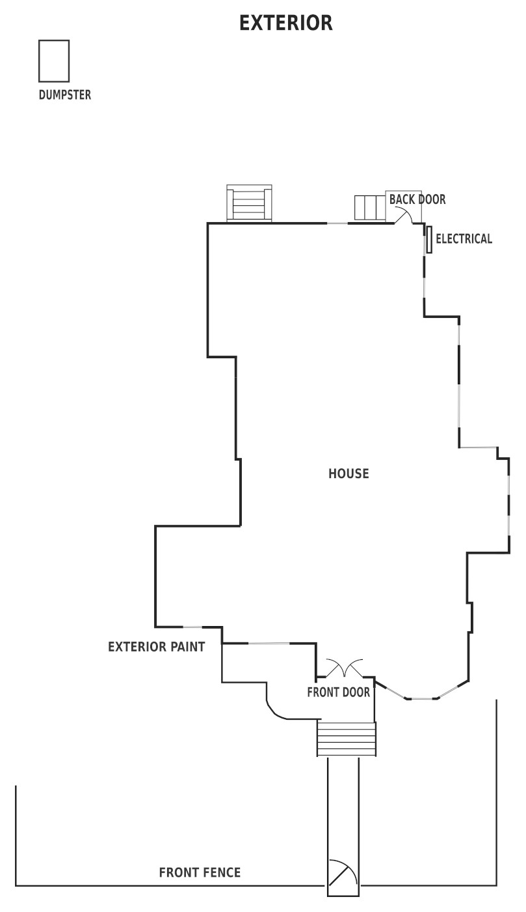

Welcome to the WES house tour!
This is a self-guided tour. You can choose 1 of 3 pre-defined routes, or you can wonder aimlessly.
Choose a route and follow the map to each tour stop. The tour has eight (8) tour stops, so plan about 20 to 30 minutes for the tour.
All tours start in the first-floor front hallway.

{% for p in site.tour_routes %} {% if p.published %} {% endif %} {% endfor %}